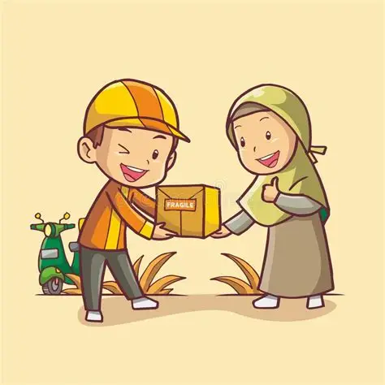
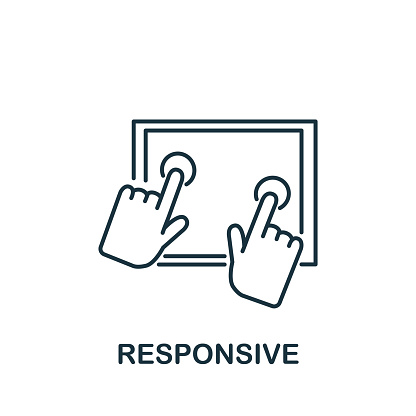
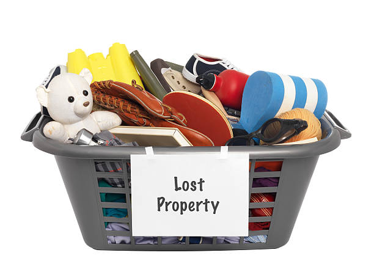

Bridging the gap between loss and reunion — satu platform untuk semua.

'">Platform komuniti yang menghubungkan mereka yang kehilangan barang dengan mereka yang menemui. Setiap laporan direkod dan boleh diakses oleh semua pengguna.
Hubungi terus pelapor barang melalui sistem pesanan dalaman. Tiada perlu berkongsi nombor telefon awam — privasi anda terjamin.
Pantau jumlah barang hilang, ditemui dan reunite melalui dashboard interaktif. Lihat impak komuniti kita bersama.

'">Dioptimumkan untuk desktop dan mudah alih. Laporkan barang dalam masa kurang 2 minit — ringkas dan efisien.
Data peribadi dilindungi. Setiap laporan mempunyai ID unik untuk rujukan dan pemantauan.

'">Dompet, telefon, kunci, beg, dokumen dan banyak lagi. Setiap kategori disusun untuk pencarian yang lebih tepat.